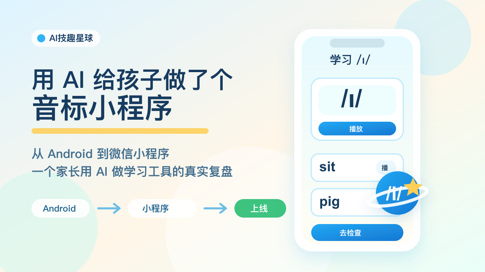
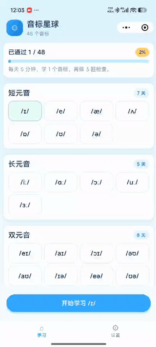

用 AI 给孩子做了个音标小程序，现在终于上线了
从 Android 到小程序 · 一个家长用 AI 做学习工具的真实复盘
技趣星球 · 用技术创造乐趣。


这个小程序其实已经做好快两周了。
真正写出来没有花太久，比较花时间的是后面的备案和上线流程。
我花了 30 块钱做个人小程序备案，又等了 10 天备案结果。
现在终于上线了，也可以拿出来跟大家分享一下。
目前在小程序里已经能搜到。
从最开始的一个想法，到 Android 版本能跑，再到改成小程序，最后提交审核、备案、上线，一路改了很多次。
说实话，刚开始我并没有那么相信 AI。
我有多年的 Android 开发经验，所以一开始心里想的是：
“先让 AI 试试。做得不行也没事，我还可以自己继续开发。”
结果没想到，0 到 1 的效果非常惊人。
不是“给我一点灵感”的那种惊人。
而是真的能做出一个可以直接用的版本。
这篇就不写成教程了。
我想按完整流程把这次经历重新捋一遍。
不是只讲“我做了什么功能”，而是讲清楚：一个家长怎么从一个想法，走到一个真的能搜到、能打开的小程序。
难度：⭐⭐⭐
如果你也想用 AI 给孩子做一个学习小工具，这篇应该能少踩几个坑。
先把完整流程摆出来：
准备做音标学习应用
→ 制作 Android 应用
→ 发现孩子用 iPad，不方便直接用
→ 制作小程序应用
→ 下载小程序开发工具，从 0 开始调
→ 真机调测、提交发布审核
→ 个人小程序备案
→ 正式上架，小程序里可以搜到
后面我就按这个流程，一步一步讲。
第一步：准备做一个音标学习应用
起因很简单。
孩子学英语，音标总是绕不过去。
偏偏我自己的发音也不算标准，陪他读的时候总觉得心里没底。
市面上的工具不是没有，但很多都太重了。
要么广告多，要么功能一堆，要么不太适合我想要的节奏。
我想要的第一版其实很朴素：
- 48 个音标都能学
- 每个音标能听标准读音
- 有简单的口型提示
- 有几个例词
- 学完能做一个小检查
- 最好能离线，不依赖网络
听起来不复杂。
但真要做，就会冒出一堆细节。
音频从哪来？
界面怎么让孩子愿意点？
过关检查是一页做完，还是一道一道来？
第三关要不要录音？
这些问题，如果全部靠自己想，很容易越想越大。
所以我先让 AI 帮我收范围。
我当时大概是这样问的：
我要做一个给中国小学生用的英语音标学习工具。
第一期不要做太大，只保留：
1. 48 个音标学习
2. 过关检查
要求：
- 移动端优先
- 音频内置，尽量离线使用
- 不能侵权，不能依赖付费素材
- 页面要适合小学生
- 每个音标能播放读音和例词
- 检查题最好一题一题来
请帮我拆成第一版产品范围、页面结构和技术方案。这个输入比“帮我做一个音标 App”好很多。
因为它先告诉 AI：别发散，先做第一版。
第二步：制作 Android 应用，先在我熟悉的地方试水
准备做应用时，我没有一上来就选最适合孩子的平台。
我先选了 Android。
原因很直接：我有多年的 Android 开发经验。
那时候我对 AI 还保持怀疑。
我心里想的是：
先让 AI 做 Android 应用。
如果做得不行，我还可以自己继续开发。
这有点像让一个新同事先做你熟悉的活。
他做得好，你就放心一点。
他做得不好，你也知道怎么继续处理。
所以第一版，我直接让 AI 先做 Android 应用。
结果让我挺意外。
它不只是生成了几段代码，而是能顺着需求把东西搭起来：
- 首页音标地图
- 音标学习页
- 播放按钮
- 例词练习
- 过关检查
- 主题切换
- 国际化文案
- 本地音频播放
当然，中间也不是一帆风顺。
播放没有声音。
导航栏顶到状态栏。
页面滚动区域不对。
题目里有一题根本没法作答。
这些都出现过。
但神奇的地方在于：你把问题说具体，它真的能继续改。
比如不要只说：
“页面不对。”
而要说：
“导航栏自己应该有高度，图标和标题要垂直居中。首页滚动区域应该从导航栏下面开始，到底部按钮上面结束。”
说到这个程度，AI 的修改就会靠谱很多。
做完 Android 版以后，我第一次有了很强的感觉：
AI 做 0 到 1，已经不是玩具了。
它可能还会犯错。
但它真的能把一个想法推到“能用”的状态。
第三步：发现平台问题，孩子用的是 iPad
Android 版本能跑之后，我反而冷静下来了。
因为我发现一个很尴尬的问题：
孩子平时学习主要用 iPad。
手机屏幕太小，真让他每天拿着手机学，我也不太放心。
所以我开始重新选平台。
iOS 也不是不能做。
但上架先要交 699 元。
这个工具本来只是想先给孩子内部用一用，可能熟悉几天就够了。
为了这件事走完整套 iOS 上架流程，我觉得有点重。
最后我选了小程序。
原因很简单：
- iPad 能打开
- 手机也能打开
- 家长分享方便
- 不用先装一个 App
- 更适合先验证孩子愿不愿意用
这不是技术上最完美的选择。
但它是当时最适合真实使用的选择。
第四步：制作小程序应用，从下载开发工具开始
说实话，我之前并不是小程序开发熟手。
所以从 Android 改小程序，一开始我也有点虚。
第一步不是写代码，而是先把小程序开发者工具装起来。
打开项目、看 app.json、看页面结构、看控制台报错。
这些东西对小程序老手很普通，但对 0 基础的人来说，刚开始会有点陌生。
但这次 AI 的价值又体现出来了。
它可以帮我快速理解小程序的结构：
app.json管页面page分页面component做组件wxss写样式InnerAudioContext播放音频RecorderManager录音
这些东西你要自己从零看文档，也能看懂。
但会慢。
AI 像一个在旁边帮你翻文档的人。
你问它：
我有一个已经能跑的 Android 音标学习 App。
现在要迁移成小程序。
我没有小程序开发经验。
请帮我按小程序结构重新拆：
- 参考现有 Android 功能
- 重新整理成小程序页面和组件
- 保留音标学习、播放、过关检查这些核心能力它给出的东西，不一定一次就完美。
但能让你马上知道下一步该干什么。
小程序真正麻烦的地方，不是“写一个按钮”。
而是很多体验细节要重新适配。
比如导航栏。
Android 上你觉得很自然的顶部栏，到了小程序里就要考虑状态栏、胶囊按钮、安全区。
比如滚动区域。
首页要在顶部导航下面滚动，还不能被底部 Tab 挡住。
比如二级页面。
点进去学习、检查、设置时，就不应该再显示底部 Tab。
这些都不是大功能。
第五步：调测、发布审核，写完代码还不算完
小程序不是功能写完就结束。
还有音频。
音标学习最怕音频不准。
我一开始就要求：音频要内置，不能花钱，不能侵权。
后来音频文件准备好了，又继续一遍遍听。
有些音感觉不准，就重新校对。
这件事 AI 能帮忙整理清单、检查路径、排查播放问题。
但“这个音到底对不对”，最后还得人来听。
这也是我这次最大的感受：
AI 可以把很多活推进去。
但你不能完全撒手。
你得像产品经理、测试、家长三个人合在一起。
一边看功能，一边看孩子怎么用，一边判断输出能不能真的上线。
第六步：备案和正式上架，最花时间的是等待
代码调完以后，我以为很快就能上线。
结果真正花时间的，是备案。
个人小程序备案花了 30 块钱。
钱倒是不多。
主要是要等。
我等了 10 天，备案结果才下来。
这 10 天里，其实代码已经好了，小程序也能预览。
但它还不能算真正上线。
直到备案通过，审核也走完，才能在小程序里搜到。
所以这次完整走下来，我才更清楚：
做小程序不是“写完代码”就结束。
还要真机调测、提交审核、等备案、正式上架。
现在它终于可以搜到了，我才敢说：这个小工具算是真正跑通了。
会给 AI 下任务，比会不会写代码更重要
这两周里，我越来越觉得，用 AI 做产品，最重要的不是会多少代码。
而是会不会把需求说清楚。
你不能只说：
“帮我做一个音标小程序。”
这句话太大了。
AI 不知道你是给谁用，也不知道第一版要做到什么程度。
更好的说法是：
“给中国小学生用，先做 48 个音标学习和过关检查。移动端优先，音频内置，不依赖网络。每个音标要能播放读音和例词，检查题一题一题来，第三关需要录音对比。”
说到这个程度，AI 才知道怎么拆页面、怎么排功能、怎么给你技术方案。
所以我现在更愿意把它理解成“给 AI 写任务说明书”。
任务越清楚，它越像一个能干活的同事。
任务越模糊，它就越容易做出一个看起来很完整、但不一定能用的东西。
后面我想把“音标星球”改成“学习星球”
现在小程序已经上线了，我反而开始想下一步。
如果只做音标，它就是一个单点工具。
但孩子的学习，不止音标这一件事。
所以我想慢慢把“音标星球”改成“学习星球”。
这些想法都来自我自己孩子的学习场景。
一方面希望他学得轻松一点。
另一方面，也想稍微解放一下我每天陪学的时间，让我能多留一点精力继续学习 AI 和做产品。
- 多孩子管理
家里不止一个孩子时，进度、错题、积分都要分开。不能混在一起。
- 拼音过关
这个是给马上上一年级的孩子准备的。
把拼音也做成一关一关的练习。声母、韵母、整体认读音节，都可以拆开学。
- 电子宠物
学习完以后，小宠物可以成长、换装、获得食物。让孩子多一点期待。
- 生字和错字积累
孩子写错的字，可以存下来。系统自动生成拼音，再变成后面的默写练习。
如果只是自己家里用，听写功能可以先加。
但如果用的人多了，就要认真算成本。
语音合成不是完全免费的，不能一开始就把服务器和音频成本扛上来。
- 英语拼读练习
这个功能我反而不一定会做。
一是市面上已经有不少现成免费的工具。
二是音频资源会带来体积和成本问题。
个人小程序包体也有上限，如果只是自己家和身边亲戚朋友用，就没必要一开始就搞服务器放音频资源。
音标之后，继续做自然拼读。让孩子看到单词时，能慢慢把声音拼出来。
- 作息时间记录
学习不能只看做了多少题。
如果睡太晚，或者一天学得太猛，也要提醒。
对孩子来说，长期稳定比短时间猛冲更重要。
- 错题原因和频次记录
错题不只记“错了”。
还要记为什么错：听错、看错、不会拼、粗心、没理解。
同一个原因出现多了，就该换练法。
- 积分卡系统
家长可以自己设计加分、减分项。
比如准时睡觉加分，主动学习加分，拖延太久扣分。
一周坚持给小奖励。
一学期达成长期目标，给一个大一点的奖励。
重点不是用奖励“收买”孩子。
而是让孩子慢慢明白：目标可以拆小，努力可以积累，长期坚持会有结果。
这些都不会一下子做完。
我现在更愿意一版只解决一个小问题。
先让孩子愿意打开。
再让孩子愿意坚持。
最后才谈更完整的学习系统。
这次给我的最大提醒
如果只看结果，这件事好像很简单：
“做了一个音标小程序。”
但真正经历一遍，会发现它其实包含了很多判断：
- 准备做音标学习应用，先把第一版范围砍小
- 先做 Android 应用，因为我有经验，可以兜底
- 发现孩子用 iPad 后，改成小程序
- 下载小程序开发工具，从 0 开始迁移
- 真机调测、提交发布审核
- 备案通过后，正式上架
这次让我对 AI 的看法变了不少。
我还是不觉得 AI 可以完全替代人。
但我会承认一件事：
对一个清楚自己想做什么的人来说，AI 已经能把起步速度拉得非常快。
以前一个想法，可能停在脑子里。
现在它真的可以变成一个已经上线、能被搜到的小程序。
这就是最让我惊讶的地方。
今天的小结
这次最让我震惊的，其实是做 Android 应用的时候。
Codex 不只是写代码。
它可以自己运行 Android 应用，操作模拟器，调试页面，还能根据桌面截图判断当前页面显示得对不对。
这已经很像一个能配合你干活的开发助手了。
今天只记住 3 件事：
- AI 做 0 到 1，已经很能打，但你要把需求说清楚。
- 平台选择要看孩子怎么用，不要只看自己会什么。
- 小程序上线不是写完代码就行，真机、权限、音频、审核备案都要一步步过。
如果你也想给孩子做一个学习工具，可以先别急着写代码。
先问自己一个问题：
孩子会在什么设备上，什么时间，用几分钟完成一次学习？
然后把答案交给 AI：
我想给孩子做一个学习小工具。
真实使用场景是：
- 设备：
- 每次使用时长：
- 学习内容：
- 家长是否陪同：
- 是否需要离线：
请帮我设计第一个可上线的小版本。
要求：
- 只保留最核心功能
- 不要账号、排行榜、复杂成长系统
- 输出页面结构、核心流程、最小技术方案
- 列出第一版明确不做的功能先别追求大而全。
能让孩子真的打开，并完成一次学习，就已经是很好的第一步。
有问题？评论区告诉我。